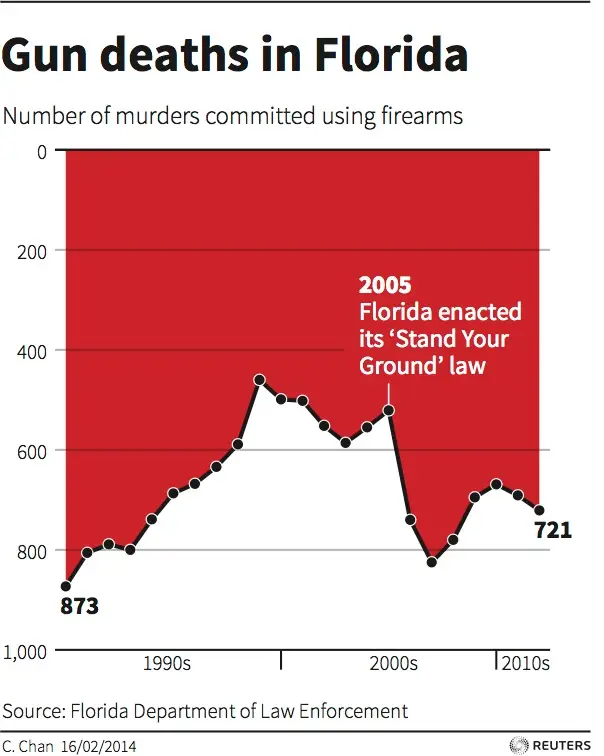

The Original Visualization
Gun deaths in Florida

Original visualization: Reuters graphic by C. Chan, published in connection with 2014 reporting on Florida's Stand Your Ground law. The graphic is reproduced here for educational critique and redesign.
Problems with the original visualization
The most significant problem with the original visualization is its inverted y-axis. The scale begins at 0 at the top and increases downward to 1,000. As a result, an increase in the number of firearm murders is represented by a downward movement in the line. This conflicts with the conventional interpretation of a quantitative axis and makes the trend difficult to read.
This problem is especially apparent around 2005. The number of firearm murders increased from 521 in 2005 to 740 in 2006 and 825 in 2007, but the original visualization represents this increase as a sharp downward movement. The visualization therefore makes an important change in the data visually counterintuitive.
The original graphic also uses a large red filled area that adds visual emphasis without communicating additional quantitative information. In addition, the horizontal axis provides only broad decade labels rather than clearly identifying the individual years represented by the observations.
Finally, the title refers to "gun deaths," while the subtitle specifies the more precise measure of "murders committed using firearms." The redesign uses the more precise terminology to make clear what is actually being measured.
The Improved Visualization
Florida firearm murders, 1990–2012
The redesigned visualization uses a conventional time-series line chart with year on the x-axis and the number of firearm murders on the y-axis. The y-axis now increases upward, so increases and decreases in the data correspond naturally to upward and downward movements of the line. Individual years are explicitly labeled, and interactive tooltips allow the reader to inspect the exact value for each observation.
The 2005 enactment of Florida's Stand Your Ground law is marked with a vertical reference line so that the policy event remains part of the historical context. The annotation identifies the event without claiming that the visualization establishes a causal relationship between the law and subsequent changes in firearm murders.
Design Decisions
My primary goal was to correct the original chart's inverted y-axis while preserving the underlying data. I considered several possible alternatives, including a bar chart, but chose a line chart because the data form an annual time series and the main task is to communicate changes over time. A conventional upward-increasing y-axis makes the sharp rise from 521 firearm murders in 2005 to 740 in 2006 and 825 in 2007 immediately visible.
I also removed the large red area because it does not provide additional quantitative information and competes with the data for visual attention. I replaced the vague decade labels with individual years and changed the title to describe the measured quantity more precisely. I kept the 2005 policy event as a neutral annotation because it is relevant historical context, but I avoided presenting the temporal association as evidence of causation. Overall, the redesigned visualization places greater emphasis on accurate quantitative interpretation and reduces unnecessary visual distraction.
Data and Source
The visualization uses annual Florida firearm-murder counts reported by the Florida Department of Law Enforcement (FDLE). The data used for the redesign come from the FDLE dataset Murder: Firearm Type and Rate for Florida, 1971–2020. For comparability with the original graphic, this project uses the 1990–2012 portion of the series.
The original Reuters visualization also identifies the Florida Department of Law Enforcement as its data source. The redesign therefore retains the same underlying measure while changing how the information is visually represented.
Data source: Florida Department of Law Enforcement — UCR Offense Data
Original visualization: Business Insider, 2014
Interpretation and limitations
The redesigned figure makes the temporal pattern in firearm-murder counts easier to interpret, but the chart alone cannot determine why those counts changed. In particular, the presence of a policy change in 2005 and a subsequent increase in firearm murders does not establish that the policy caused that increase. Establishing a causal effect would require a research design and statistical analysis that account for other factors that may influence firearm-murder rates.